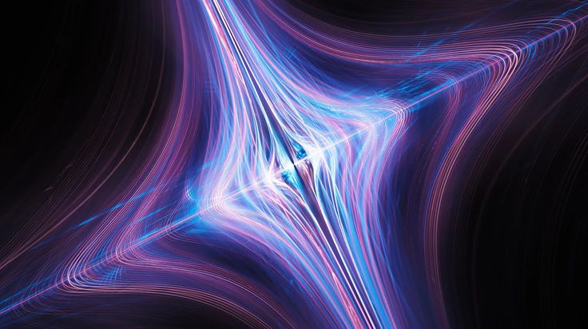
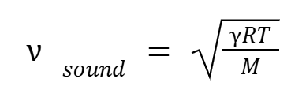

By Maria Antonia Posada

Image source: view
What are waves?
In physics, a wave is a disturbance that propagates through space or a medium, transferring energy from one place to another.
Types of waves
→ Electromagnetic waves:
They are transmissions of energy through space, whether it's empty or not. Meaning, they do not need matter to travel. Their speed in vacuum is approximately 299,792,458 m/s, which is the speed of light. (or in scientific notation, 3 x 108).
→ Mechanical waves:
They are transmissions of energy through material media, this means they cannot travel through vacuum. Their speed depends on:
The material,
The temperature, and
Molar mass.
In particular, for gases, the speed of sound is given by:

Gamma = adiabatic constant of the gas
R = universal gas constant
T = temperature
M = molar mass
This means that sound travels faster in hotter gases or lighter molecules(less molar mass).
→Gravitational waves:
They are transmissions of energy through space-time. Like ripples that carry that energy across the cosmos, produced by accelerating massive objects, such as merging black holes or neutron stars.